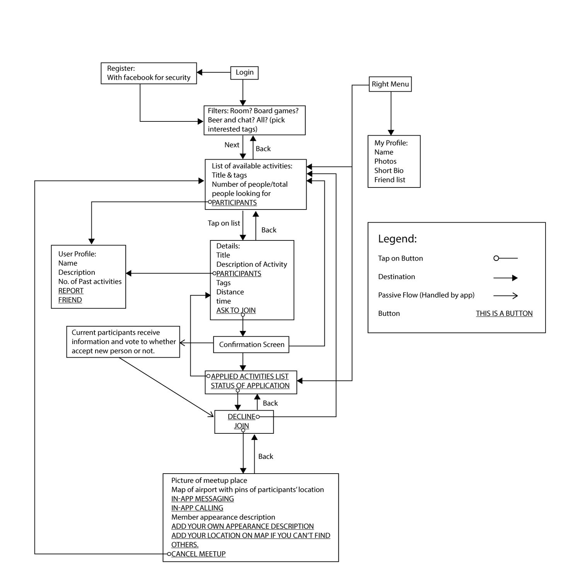

Timeline: 01/2016
Project: Personal
Type: Web App Redesign
Activair is designed for flyers stuck at airport over a long period of time due to unexpected reasons. It provides a “chat-room” like facility for people to organize activities with fellow travelers in the airport.
As a frequent traveler myself, the biggest pain points that I had during long layovers (especially the unexpected ones) are:
1. Lack of activities to do. Staring at computer/phone screen gets tiring, and
2. Lodging is expensive when not planned ahead.
These pain points can be solved by an app that connects people with the same interests to organize fun
activities together. Whether you want to kill time, or try to find a buddy to share a hotel room, there
are probably people who are stuck in the airport and are looking for the same.
It is nevertheless intimidating to reach out to others in person because you wouldn’t know what
others are looking for. Therefore, to solve the problem, I created this app to connect people with similar
interests: whether you want to grab a beer and talk about Hockey with someone, or you want to find someone
to share a hotel room with, you can ask and there will be people like you.

The users will be able to use the app to create a “activity room” and have it visible in a list of rooms. Other users are able to filter different rooms by choosing the tags that they find interesting, the tags include but are not limited to: beer, chat, friend, flight destination, board games, etc. After choosing a room, the users are able to ask to join. The system would prompt the current participants in the room to vote for the new user to join. If more than half of the people vote yes then the user receives an invitation to join, which they could deny or accept.
After accepting the invitation, the user is given a map of the airport they are currently located in and with pins indicating other user’s location. They are also able to call and message the other members through the in-app text and call functions. If they are not good at navigating, they are able to upload images of their current location, tag themselves on the map, add their physical description/photos for other members to find them.
The users have the option to add each other to their friend lists if they find them fun and willing to become friends with them afterwards. Their contact information will be shared with each other.

However, one of the main concerns that the users might have could be the security. Therefore, the app would employ Facebook registration as a safety protocol. They would also provide phone numbers to the app for security measures. However, the users will not have access to each other’s Facebook account or phone number unless they friend each other. Users are able to report users if they feel uncomfortable. By employing this method, it makes sure that the app provides secure access and at the same time does not breach the privacy of individual users.
The best part of this solution is its scalability: it can be applied even more broadly to the general public, for anyone who is interested to find people with similar interests and make new connections with each other.